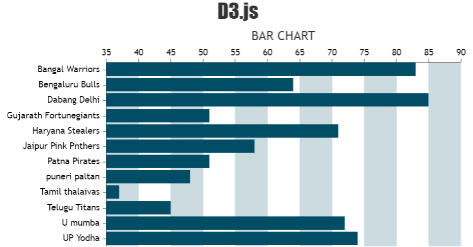

Assignment 2
Tableau Project

Tree Map

In the above tree map it shows data of pkl season 7 team details It is commonly used to display and compare data across categories or subcategories.
It helps to visualize and compare data in a hierarchical way.
Bar Graph

Bar graph is a visual representation of data using rectangular bars where the length or height of each bar is proportional to
the value it represents is X axis Matches played by team & In Y axis teams names,its show the teams ranking by points.
Packed Bubble

A packed bubble visualization is a type of chart that uses circles (bubbles) to represent data. The size of the circle corresponds to
the value of the data it represents the players details and player position and cost and categories and all the data is visual in this packed bubble
Gephi visualization
Gephi visualization is done by taking dataset named LesMiserables.gefx
the Les Misérables dataset is a great example of how network visualization can be used to gain insights into complex datasets
With Gephi, you can create stunning visualizations of this dataset and explore the relationships between characters in the novel.

Gephi pdf link click here to see.
Data visualization using Python

Colab Python code link click here to access .
D3.js visualization
D3 link click here to visualize the data .